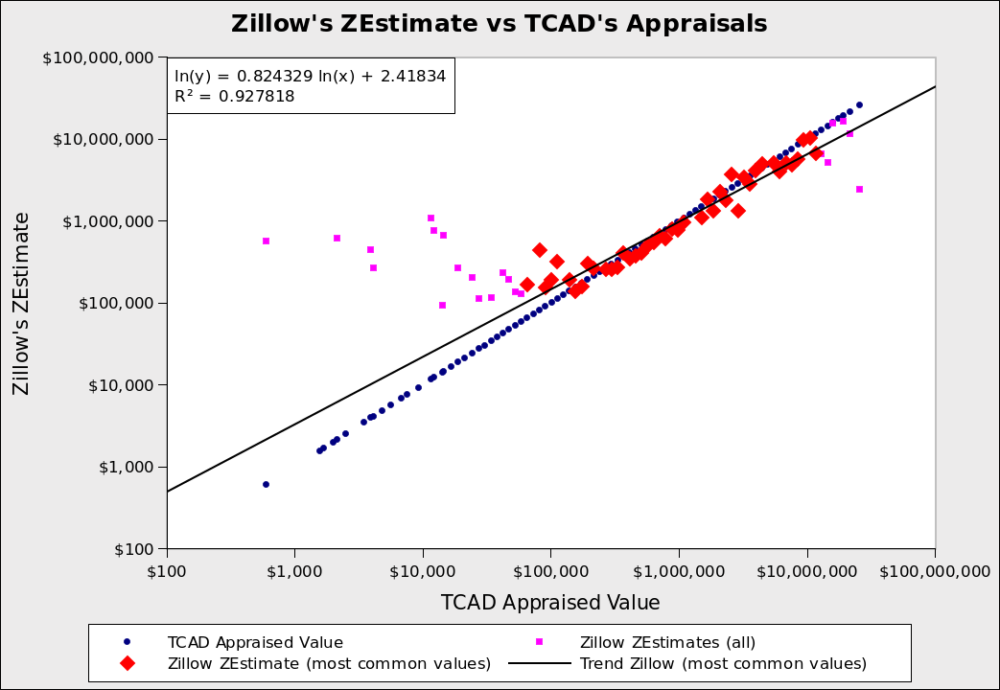

My appraisal data comes from the Travis County Appraisal District, known as "TCAD". The appraisals are the estimated price of property on January 1st, 2023. I used data for the whole county.
I need something to compare those prices against, so I'm using Zillow's ZEstimates. Zillow claims that its data is accurate in the Austin metro area: half of home sales are within 6.69% of the ZEstimate.
Zillow is accurate for houses, so I restricted the TCAD data to real property in Travis County that had state code "A1", which means "single-family house". That was 58% of the data.
I wanted to know how TCAD did over the full range of house prices. The minimum appraisal was $600 and the maximum was $28.2 million. So, I took a sample of 100 houses spread evenly over the logarithm of appraisals. House prices usually follow a log-normal distribution, so taking the log(arithm) was appropriate.
I looked up the ZEstimate for each of the 100 houses by hand. Some properties didn't have a ZEstimate. For others, I couldn't find the ZEstimate because the address from TCAD was missing the house number. I gathered this data on May 4th, while TCAD's appraisal prices are from January 1st. Zillow estimates that prices have decreased by about 4.4% since then, so, for the ZEstimates I did get, I scaled them down by 4.4%. (NOTE: This scaling could introduce error. That 4.4% may have fallen more on one end of the market than the other.)
The result was this graph:
 I wanted the full range of prices and went too far. The pink squares are in the top and bottom 0.1% of prices. The red diamonds represent the 99.8% most common appraised values.
The pink squares and red diamonds are Zillow's ZEstimates. The blue dots are TCAD's appraised values. When the blue dot is below the pink/red, TCAD is underappraising the property. When the blue dot is above the pink/red, TCAD is overappraising the property.
What's with the pink vs. red? My range of prices was too wide. I had 7 samples in the top 0.1% and 43 samples in the bottom 0.1%. I thought their results were interesting, so I included them in the graph. Those extreme values are colored pink. The commonly occurring prices are colored red. The black solid trend line is the trend for the (red) common values.
For expensive houses, TCAD's appraisal is higher than Zillow's estimate. That is true for both the trend line and the extreme values. So, expensive homes are not being underappraised (compared to Zillow). The rich have to find other ways to avoid property taxes.
For lower-priced homes, it is the opposite. The appraised value is below Zillow's estimate. These are being underappraised. We are losing taxes here, but these homes are worth less, so the loss in revenue is small.
(Note: Don't assume cheap houses are owned by "poor" families, who deserve lower taxes. 47% of Travis County households don't own their home. So, owners of cheap houses are probably in the upper half of wealth.)
Bravo, TCAD! You seem to be valuing residential property well. As for commercial property, I don't have a good way to measure TCAD's appraisals. Commercial property is important because that is where TCAD has a history of underappraising. The State of Texas makes it hard for them, because we're a non-disclosure state: when a property is sold, the price isn't made public. So, the rich may still be exploiting property tax on their companies, but not under their homes.